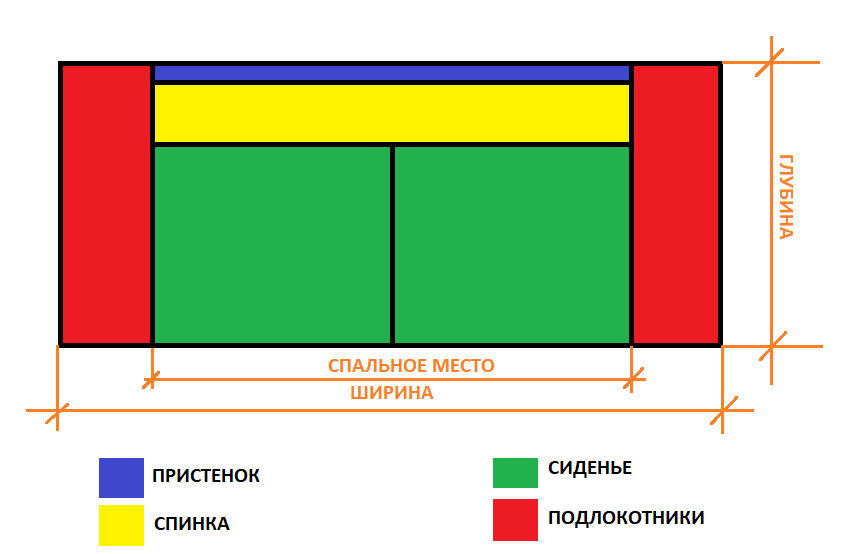
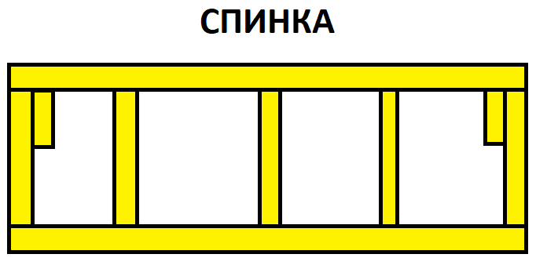
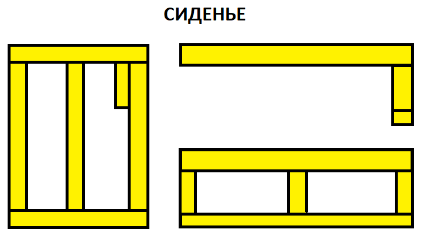
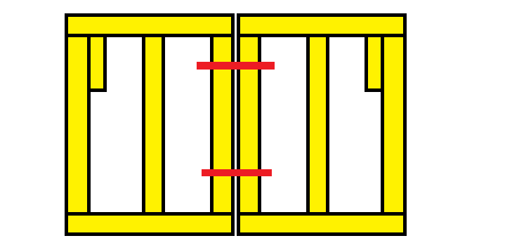
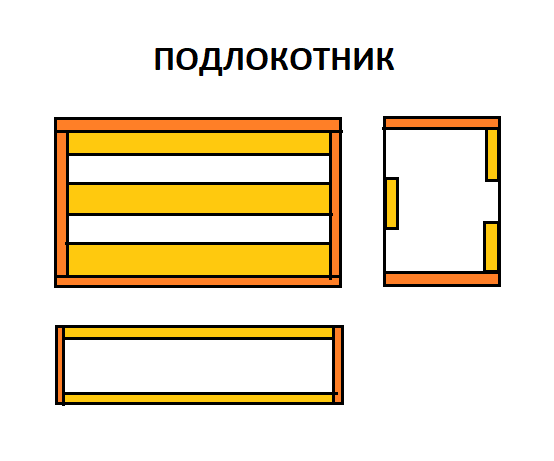

Менеджер
Менеджер оформляет заказ и это самый важный этап
на пути к его изготовлению.
Чтобы правильно оформить заказ, нужно понимать:
какие вопросы задавать, что спрашивать и советовать.
Для этого нужно понимать как "расписывается диван"
Подробнее в рубрике диваны.
Так же нужно предупредить заказчика, что изменения в заказ внести нельзя,
если он пущен в работу. Нельзя отпилить от сидения часть или наоборот увеличить.
(Увеличить локоти, после того как их сделали нельзя. Нужно платить за новые.)
Что нужно указывать в заказе:
-
Общий размер. (На выходе. Уточните на сколько критично отступление от размера.
Если диван стоит у стены, то увеличение размера из-за паралона может закрыть дверной проём.)
-
Спальное место. (Так же уточняйте все размеры, что и как хочет получить заказчик на выходе)
-
Количество делений. (На прямых диванах особенно! Лофт со спальным местом
200см может быть изготовлен на 1-2-3 деления. Как угадать?)
-
Пышность. (Стандарт/пышный/пышный со складками.)
-
Угол дивана (Сидя слева/ сидя справа)
-
Пристенок. (Если имеется, особенно на модели Соффорд. Так же стандартный, либо до пола тоже указать.)
-
Механизм. (Еврокнига/ тик-так/ без раскладки)
-
Пуф. (Размеры ширины и высоты на выходе!)
-
На каких ножках диван (Ножки на пуф, если прилагается, тоже уточнить)
-
Вид шва. (Кант/бурлет)
-
Декор подушки. (Размеры, количесвто, ткань)
Диван по фото или необычный заказ заслуживает отдельного внимания.
С фото нельзя снять размер! Их нужно указывать, как и все выше перечисленные пункты.
Прикладывая к заказу фото не нужно делать скриншот инстаграма, прикрепите ссылку на пост.
Так можно будет перейти по ней и посмотреть все фотографии.
Так же нужно объяснить заказчику почему то или иное пожелание невозможно выполнить.
Смотри рубрику диваны.
Столяр
Столяр принимает заказ в работу.
Последовательность действий при выполнении работ:
-
Посмотреть не присылали этот заказ ранее (Дублирование).
-
Узнать есть ли на данный диван крой.
-
Если нет расписать диван самостоятельно.
-
Подписывать элементы большим, читаемым шрифтом.
Обивщик
Обивщик принимает работу столяра.
Уточните какая у дивана должна быть пышность, если она не указана.
Подушки, пуф. Так же нужно не забыть.
НЕЛЬЗЯ пиздить чужие детали (Локти, пристенки и т.д.)
В случае экстренной ситуации, когда нужен элемент, а его нет- можно найти подходящий.
Обязательно укажите номер заказа, деталь с которого вы взяли и на какой заказ.
Передайте эту информацию в столярный цех.
Швея
Швея получает заказ.
Уточняет готовы ли на него элементы. Если диван ещё не изготавливался- идёт в столярный цех
к столяру, который будет делать конкретный заказ. Для избежания ошибок в размерах
диван расписывается вместе, либо швея/столяр делают это самостоятельно, после чего сверяют размеры.
Уточняющие вопросы по заказу задаются начальнику производства.
Диваны
Рассмотрим "расписывание дивана" на примере модели лофт

Различными цветами отмечены и подписаны детали.
Зная общий размер можно вычислить ширину подлокотников.
При 250см общий габарит и спальном месте 200см на подлокотники
остаётся 50см поровну. По 25см ширина подлокотников. В стандартном варианте.
Для вычисления ширины каждого сиденья, спальное место делится на количесвто
сидений с учётом мест соединения. От 200см отнимаем 1см на соединение сидений
и делим на 2 и получаем 99.5см.
Спинка, наоборот учитывает и прибавляет места соединений. То есть если мы имеем
два деления по 99.5см, то учитывая соединение делений получим (99.5 + 99.5 + 1) = 200см
Высота спинки зависит от глубины спального места. Складывается оно из глубины сиденья
и высоты спинки, когда диван находится в разложенном состоянии. Стандартная высота
спинки модели лофт (по столярке) 63см, а глубина сидений 78см. Итого ~145см учитывая обивку.
Подлокотники у данной модели в стандартном размере по столярке идут следующие:
ширина 23см, длина 105см, высота 55см. Далее мы рассмотрим отдельно каждый
элемент.

На рисунке схематично показано расположение бруса для изготовления спинки.
Брус используется 4х5см и кладётся на ребро, то есть спинка получается 5см
толщиной, плюс обшива. Об этом чуть позже.
Длинные бруски напиливаются по размеру спинки. Внутрениие бруски пилятся такого размера,
Чтобы получить желаемую высоту спинки, учитывая верхний и нижный брусок.
63см высота спинки данной модели. 4см брус сверху и снизу. В сумме 8см. Тогда
63 - 8 = 55см длинна поперечных брусков. Их количесвто зависит от длины спинки,
расстояние между брусками не должно превышать 50см.
Короткие бруски внутри напиливаются по 25см и служат для того, чтобы к ним
крепилась петля в процессе сборки дивана. При механизме тик-так, устанавливается
по два бруска с каждой стороны.
Далее по размеру спинки (минус 0.5см) выризается два листа ДВП для её оббивки
То есть если спинки 200х63см, то нужно два куска ДВП по 199.5х62.5см

Сиденье в модели лофт по стандарту идёт 78см глубиной по столярке. Собирается таким же методом,
что и спинка. Однако царга- передняя часть сиденья собирается несколько иначе.
-
Напиливается брус по ширине сидений. 3шт.
-
Напиливается брус по глубине сидений с учётом внешнего бруса. (3шт по 70см стандарт)
-
Брусок 25см как в спинке ставится с внешней стороны от соединения с другим сиденьем.
-
Царга устанавливается на противоположной от бруска стороне, как показано на рисунке.
-
Бруски на царге 15.5см стандарт. Верхний брусок стоит ребром, нижний плошмя. Итого:
15.5 + 4 + 5 = 24.5см стандартная высота царги по столярке у модели лофт.
-
Обшивается сиденье МДФ с таким же учётом 0.5 см как и спинка.
-
Сбоку по шаблону засверливаются два отверстия 1см диаметром для соединения. Смотри рисунок.

Подлокотники собираются из ДСП как показано на рисунке.
